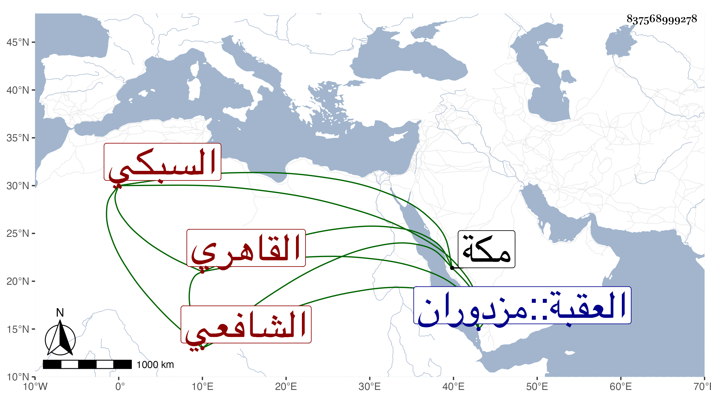

0902Sakhawi.DawLamic.ITO20230111-ara1.EIS1600.837568999278
Biography ID: 837568999278
21
علي بن محمد أبي البركات بن ملك بن أنس السبكي الأصل القاهري الشافعي والد التقي محمد الآتي . حفظ القرآن وغيره واشتغل عند البيجوري والبرشنسي وغيرهما ، وناب في الحكم عن الجلال البلقيني فمن بعده إلى أن غلب عليه الجذب وحكى من يوثق به عنه أنه عندما توجه للحج إلى العقبة رأى النبي صلى الله عليه وسلم في النوم وأمره بزيارته ذلك العام فتهيأ مع عدم أهبة بزاد قليل وتوجه في البحر قال الحاكي عنه وصحبني معه فسبقنا إلى دخول مكة وحججنا وزرنا ورجعنا مع الركب ، وكان يكتب الخط البديع وله باع في النثر الفائق والنظم الرائق . ومات سنة سبع وأربعين وثمانمائة ودفن بحوش سعيد السعداء عند والده بجوار جدهما شيخ لإسلام تقي الدين رحمه الله .
